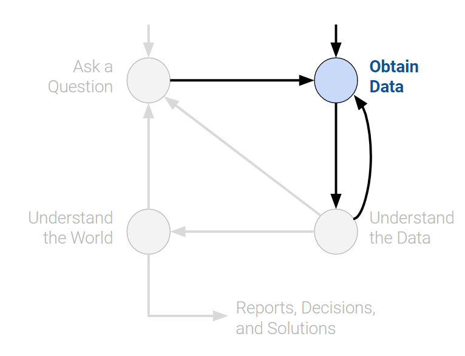

# `pd` is the conventional alias for Pandas, as `np` is for NumPy
import pandas as pd1 Introduction
Data science is an interdisciplinary field with a variety of applications and offers great potential to address challenging societal issues. By building data science skills, you can empower yourself to participate in and drive conversations that shape your life and society as a whole, whether that be fighting against climate change, launching diversity initiatives, or more.
The field of data science is rapidly evolving; many of the key technical underpinnings in modern-day data science have been popularized during the early 21st century, and you will learn them throughout the course. It has a wide range of applications from science and medicine to sports.
While data science has immense potential to address challenging problems facing society by enhancing our critical thinking, it can also be used obscure complex decisions and reinforce historical trends and biases. This course will implore you to consider the ethics of data science within its applications.
Data science is fundamentally human-centered and facilitates decision-making by quantitatively balancing tradeoffs. To quantify things reliably, we must use and analyze data appropriately, apply critical thinking and skepticism at every step of the way, and consider how our decisions affect others.
Ultimately, data science is the application of data-centric, computational, and inferential thinking to:
- Understand the world (science).
- Solve problems (engineering).
A true mastery of data science requires a deep theoretical understanding and strong grasp of domain expertise. This course will help you build on the former – specifically, the foundation of your technical knowledge, allowing you to take data and produce useful insights on the world’s most challenging and ambiguous problems.
To set you up for success, we’ve organized concepts in Data 100 around the data science lifecycle: an iterative process that encompasses the various statistical and computational building blocks of data science.
1.1 Data Science Lifecycle
The data science lifecycle is a high-level overview of the data science workflow. It’s a cycle of stages that a data scientist should explore as they conduct a thorough analysis of a data-driven problem.
There are many variations of the data science lifecycle but the core ideas are all the same. In Data 100, we visualize the stages of the lifecycle using a flow diagram. Notice how there are two entry points.

1.1.1 Ask a Question
Whether by curiosity or necessity, data scientists constantly ask questions. For example, in the business world, data scientists may be interested in predicting the profit generated by a certain investment. In the field of medicine, they may ask whether some patients are more likely than others to benefit from a treatment.
Posing questions is one of the primary ways the data science lifecycle begins. It helps to fully define the question. Here are some things you should ask yourself before framing a question.
- What problems are we trying to solve?
- The goal of asking a question should be clear in order to justify your efforts to stakeholders.
- What are the hypotheses we want to test?
- This gives a clear perspective from which to analyze final results.
- What are the metrics for our success?
- This establishes a clear point to know when to conclude the project.
1.1.2 Obtain Data
The second entry point to the lifecycle is by obtaining data. A careful analysis of any problem requires the use of data. Data may be readily available to us, or we may have to embark on a process to collect it. When doing so, it is crucial to ask the following:
- What data do we have, and what data do we need?
- Define the units of the data (people, cities, points in time, etc.) and what features to measure.
- How can we sample more data?
- Scrape the web, collect manually, run experiments, etc.
- Is our data representative of the population we want to study?
- If our data is not representative of our population of interest, then we can come to incorrect conclusions.
Key procedures: data acquisition, data cleaning

1.1.3 Understand the Data
Raw data itself is not inherently useful. It’s impossible to discern all the patterns and relationships between variables without carefully investigating them. Therefore, translating pure data into actionable insights is a key job of a data scientist. For example, we may choose to ask:
- How is our data organized, and what does it contain?
- Knowing what the data says about the world helps us better understand the world.
- Do we have relevant data?
- If the data we have collected is not useful to the question at hand, then we must collect more data.
- What are the biases, anomalies, or other issues with the data?
- These can lead to many false conclusions if ignored, so data scientists must always be aware of these issues.
- How do we transform the data to enable effective analysis?
- Data is not always easy to interpret at first glance, so a data scientist should strive to reveal the hidden insights.
Key procedures: exploratory data analysis, data visualization.

1.1.4 Understand the World
After observing the patterns in our data, we can begin answering our questions. This may require that we predict a quantity (machine learning) or measure the effect of some treatment (inference).
From here, we may choose to report our results, or possibly conduct more analysis. We may not be satisfied with our findings, or our initial exploration may have brought up new questions that require new data.
- What does the data say about the world?
- Given our models, the data will lead us to certain conclusions about the real world.
- Given our models, the data will lead us to certain conclusions about the real world.
- Does it answer our questions or accurately solve the problem?
- If our model and data can not accomplish our goals, then we must reform our question, model, or both.
- If our model and data can not accomplish our goals, then we must reform our question, model, or both.
- How robust are our conclusions and can we trust the predictions?
- Inaccurate models can lead to false conclusions.
Key procedures: model creation, prediction, inference.

The data science lifecycle is meant to be a set of general guidelines rather than a hard set of requirements. In our journey exploring the lifecycle, we’ll cover both the underlying theory and technologies used in data science. By the end of the course, we hope that you start to see yourself as a data scientist.
With that, we’ll begin by introducing one of the most important tools in exploratory data analysis: pandas.
In this sequence of lectures, we will dive right into things by having you explore and manipulate real-world data. We’ll first introduce pandas, a popular Python library for interacting with tabular data.
1.2 Tabular Data and pandas
Data scientists work with data stored in a variety of formats. This class focuses primarily on tabular data — data that is stored in a table.
Tabular data is one of the most common systems that data scientists use to organize data. This is in large part due to the simplicity and flexibility of tables. Tables allow us to represent each observation, or instance of collecting data from an individual, as its own row. We can record each observation’s distinct characteristics, or features, in separate columns.
To see this in action, we’ll explore the elections dataset, which stores information about political candidates who ran for president of the United States in previous years.
In the elections dataset, each row (blue box) represents one instance of a candidate running for president in a particular year. For example, the first row represents Andrew Jackson running for president in the year 1824. Each column (yellow box) represents one characteristic piece of information about each presidential candidate. For example, the column named “Result” stores whether or not the candidate won the election.
Your work in Data 8 helped you grow very familiar with using and interpreting data stored in a tabular format. Back then, you used the Table class of the datascience library, a special programming library created specifically for Data 8 students.
In Data 100, we will be working with the programming library pandas, which is generally accepted in the data science community as the industry- and academia-standard tool for manipulating tabular data (as well as the inspiration for Petey, our panda bear mascot).
Using pandas, we can
- Arrange data in a tabular format.
- Extract useful information filtered by specific conditions.
- Operate on data to gain new insights.
- Apply
NumPyfunctions to our data (our friends from Data 8). - Perform vectorized computations to speed up our analysis (Lab 1).
To begin our work in pandas, we must first import the library into our Python environment. This will allow us to use pandas data structures and methods in our code.
There are three fundamental data structures in pandas:
Series: 1D labeled array data; best thought of as columnar data.DataFrame: 2D tabular data with rows and columns.Index: A sequence of row/column labels.
DataFrames, Series, and Indices can be represented visually in the following diagram, which considers the first few rows of the elections dataset.

Notice how the DataFrame is a two-dimensional object — it contains both rows and columns. The Series above is a singular column of this DataFrame, namely the Result column. Both contain an Index, or a shared list of row labels (the integers from 0 to 4, inclusive).
Today, we will start off from Series object.
1.3 Series
A Series represents a column of a DataFrame; more generally, it can be any 1-dimensional array-like object. It contains both:
- A sequence of values of the same type.
- A sequence of data labels called the index.
In the cell below, we create a Series named s.
s = pd.Series(["welcome", "to", "data 100"])
s0 welcome
1 to
2 data 100
dtype: object # Accessing data values within the Series
s.valuesarray(['welcome', 'to', 'data 100'], dtype=object) # Accessing the Index of the Series
s.indexRangeIndex(start=0, stop=3, step=1)By default, the index of a Series is a sequential list of integers beginning from 0. Optionally, a manually specified list of desired indices can be passed to the index argument.
s = pd.Series([-1, 10, 2], index = ["a", "b", "c"])
sa -1
b 10
c 2
dtype: int64s.indexIndex(['a', 'b', 'c'], dtype='object')Indices can also be changed after initialization.
s.index = ["first", "second", "third"]
sfirst -1
second 10
third 2
dtype: int64s.indexIndex(['first', 'second', 'third'], dtype='object')1.3.0.1 Selection in Series
Much like when working with NumPy arrays, we can select a single value or a set of values from a Series. To do so, there are three primary methods:
- A single label.
- A list of labels.
- A filtering condition.
To demonstrate this, let’s define a new Series s.
s = pd.Series([4, -2, 0, 6], index = ["a", "b", "c", "d"])
sa 4
b -2
c 0
d 6
dtype: int641.3.0.1.1 A Single Label
# We return the value stored at the index label "a"
s["a"] 41.3.0.1.2 A List of Labels
# We return a Series of the values stored at the index labels "a" and "c"
s[["a", "c"]] a 4
c 0
dtype: int641.3.0.1.3 A Filtering Condition
Perhaps the most interesting (and useful) method of selecting data from a Series is by using a filtering condition.
First, we apply a boolean operation to the Series. This creates a new Series of boolean values.
# Filter condition: select all elements greater than 0
s > 0 a True
b False
c False
d True
dtype: boolWe then use this boolean condition to index into our original Series. pandas will select only the entries in the original Series that satisfy the condition.
s[s > 0] a 4
d 6
dtype: int64